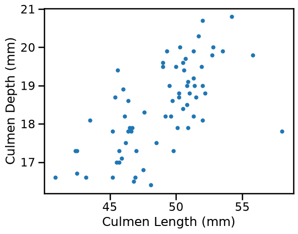
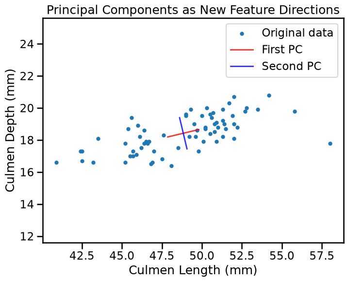
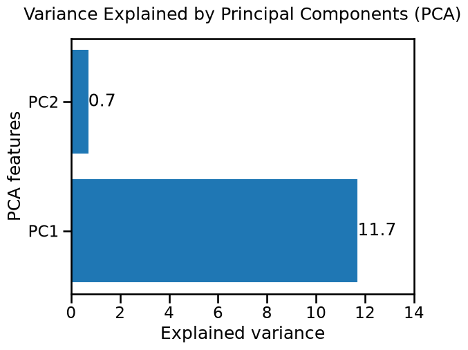
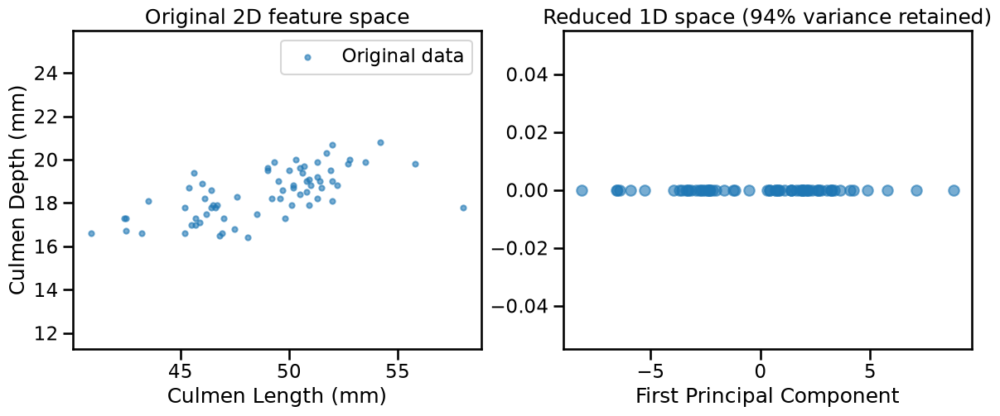
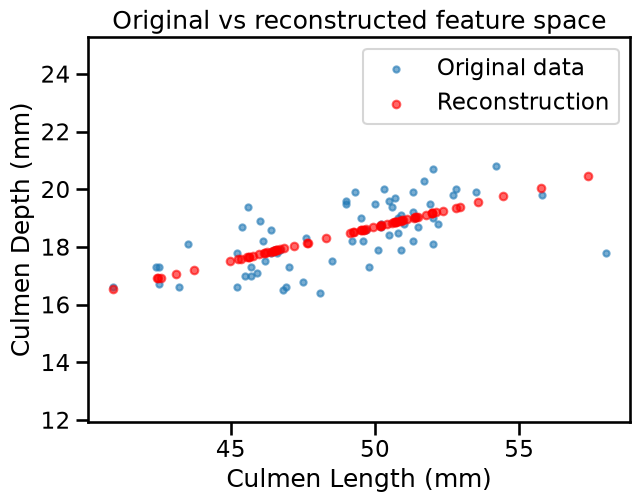
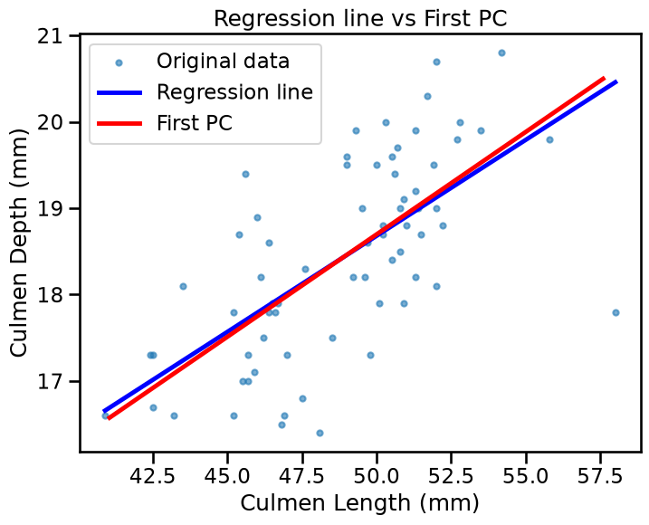
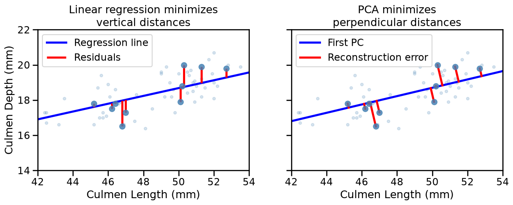

Geometric Intuitions of PCA#
Principal Component Analysis (PCA) is a dimensionality reduction technique. It is an unsupervised learning method, i.e. it works with features only but there is no target variable.
The objective of this notebook is to build up our geometric intuition using a simple 2D feature space. For this purpose we load the penguins dataset and keep two features that are correlated: the length and depth of the culmen. As this is an unsupervised task, the idea is not to predict either feature, for example by fitting a regression line, but rather to measure how much independent information can be obtained from each of them.
import pandas as pd
import matplotlib.pyplot as plt
penguins = pd.read_csv("../datasets/penguins_classification.csv")
penguins = penguins[penguins["Species"] == "Chinstrap"]
penguins = penguins.drop(columns="Species")
_ = penguins.plot.scatter(x="Culmen Length (mm)", y="Culmen Depth (mm)")

Finding the principal component#
PCA is intended to find new features (called principal components, or “PC”) that capture enough of the structure in our data.
The first PC is the direction along which our data varies the most. Because our features are correlated, there is a clear dominant pattern in the data which PCA can identify. The second PC would align with the direction with second to most variance, and so on.
We begin by extracting both components (n_components = n_features) to
understand the full picture. This is not dimensional reduction yet. In
this case the components are linear combinations of the (centered) original
features, in other words, just a change of basis to a more convenient
coordinate system.
from sklearn.decomposition import PCA
pca = PCA(n_components=2)
pca.fit(penguins)
PCA(n_components=2)In a Jupyter environment, please rerun this cell to show the HTML representation or trust the notebook.
On GitHub, the HTML representation is unable to render, please try loading this page with nbviewer.org.
Parameters
Understanding PCA attributes#
After fitting, PCA provides a components_ attribute, which is an array of
shape (n_components, n_features). Each row is a PC, each column corresponds
to original features:
pca.components_
array([[ 0.97301717, 0.23073271],
[-0.23073271, 0.97301717]])
These components_ tell us how to create the new features (after centering):
feature_names = penguins.columns.tolist()
for i, component in enumerate(pca.components_):
terms = " + ".join(
f"{w:.1f} * ({f} - {m:.1f})"
for w, f, m in zip(component, feature_names, pca.mean_)
)
print(f"PC{i + 1} = {terms}")
PC1 = 1.0 * (Culmen Length (mm) - 48.8) + 0.2 * (Culmen Depth (mm) - 18.4)
PC2 = -0.2 * (Culmen Length (mm) - 48.8) + 1.0 * (Culmen Depth (mm) - 18.4)
The components are perpendicular to each other. Indeed, components in the space of reduced dimensions work as new coordinate axes. We can plot them to better visualize the effect.
import numpy as np
fig, ax = plt.subplots(figsize=(8, 6))
penguins.plot.scatter(
x="Culmen Length (mm)", y="Culmen Depth (mm)", label="Original data", ax=ax
)
center = penguins[["Culmen Length (mm)", "Culmen Depth (mm)"]].mean().values
for component, color, label in zip(
pca.components_,
["red", "blue"],
["First PC", "Second PC"],
):
# Draw axes defining the PC space
endpoints = np.array([center - component, center + component])
ax.plot(
endpoints[:, 0],
endpoints[:, 1],
color=color,
linewidth=2,
label=label,
alpha=0.8,
)
ax.legend()
ax.axis("equal")
_ = ax.set_title("Principal Components as New Feature Directions")

The red line shows the first PC. It follows the correlation pattern in our data. The blue line (second PC) is perpendicular and captures the remaining variance.
Another important attribute of PCA is the explained_variance_. By plotting
it we can confirm quantitatively what we know: the first PC “explains” most of
the variance. In other words, our data is more spread over the direction of
the first PC.
fig, ax = plt.subplots()
bars = ax.barh(
range(1, len(pca.explained_variance_) + 1),
pca.explained_variance_.round(decimals=1),
)
ax.bar_label(bars)
ax.set_xlim([0, 14])
ax.set_yticks([1, 2], labels=["PC1", "PC2"])
ax.set_xlabel("Explained variance")
ax.set_ylabel("PCA features")
_ = ax.set_title("Variance Explained by Principal Components (PCA)", y=1.05)

The explained_variance_, is the statistical variance (as computed by the
method var) of the PC space, in other words, in the new space obtained by
transforming the original penguins.values using the matrix defined by
pca.components_.
print(pca.explained_variance_)
print(
(penguins.values @ pca.components_.T).var(axis=0, ddof=1)
) # ddof scales by n_samples-1
[11.73819374 0.70155823]
[11.73819374 0.70155823]
Remember that the variance is simply the square of the standard deviation:
pca_std = np.sqrt(pca.explained_variance_)
print(f"Std along the first PC : {pca_std[0]:.3f} mm")
print(f"Std along the second PC : {pca_std[1]:.3f} mm")
Std along the first PC : 3.426 mm
Std along the second PC : 0.838 mm
As both features share the same unit (mm), the standard deviation of each component is still interpretable in mm in this particular case. But in the general case PCA can mix heterogeneous units from different features, making such interpretation meaningless.
If we are more interested in the proportion of the total variance carried by
each component, and not so much on the original scale, we can make use of the
explained_variance_ratio_ attribute:
# total_explained_variance = pca.explained_variance_.sum()
for i, var_ratio in enumerate(pca.explained_variance_ratio_):
print(f"PC{i + 1} carries {100 * var_ratio:.1f}% of the total variance")
PC1 carries 94.4% of the total variance
PC2 carries 5.6% of the total variance
Percentages can also be obtained directly from the explained_variance_:
100 * pca.explained_variance_ / pca.explained_variance_.sum()
array([94.36035193, 5.63964807])
Notice that how much data spreads over a given direction strongly depends on the scale of the original features, but we will discuss the need for scaling in the next notebook.
Dimensionality reduction from 2D to 1D#
As we saw, PCA is a transformation to a PC space where axes align with the directions of maximum variance. What makes this interesting is when used as a dimensionality reduction technique. In this case we can represent our 2D data using just the first principal component, effectively reducing from 2 features to 1.
This works well here because our original features were correlated. One degree of freedom suffices to capture most of the information, which is the overall size of the penguin.
# Transform to principal component space
pca_1d = PCA(n_components=1)
penguins_transformed = pca_1d.fit_transform(penguins)
print(f"Original shape: {penguins.shape} (samples, features)")
print(f"Transformed shape: {penguins_transformed.shape} (samples, components)")
Original shape: (68, 2) (samples, features)
Transformed shape: (68, 1) (samples, components)
fig, (ax1, ax2) = plt.subplots(1, 2, figsize=(14, 5))
penguins.plot.scatter(
x="Culmen Length (mm)",
y="Culmen Depth (mm)",
label="Original data",
alpha=0.6,
ax=ax1,
)
ax1.set_title("Original 2D feature space")
ax1.axis("equal")
ax2.scatter(
penguins_transformed.ravel(),
np.zeros(len(penguins_transformed)),
alpha=0.6,
)
ax2.set_xlabel("First Principal Component")
_ = ax2.set_title(
f"Reduced 1D space ({pca_1d.explained_variance_ratio_[0]:.0%} variance retained)"
)

The transformation creates a new 1D representation where samples that were close in the original 2D space remain close in the new 1D space. The structure is preserved.
Loss of information during reconstruction#
When we use fewer components than original features, we lose some information.
The inverse_transform method shows us what our data looks like when reconstructed
from the reduced representation.
penguins_reconstructed = pca_1d.inverse_transform(penguins_transformed)
fig, ax = plt.subplots(figsize=(7, 5))
penguins.plot.scatter(
x="Culmen Length (mm)",
y="Culmen Depth (mm)",
label="Original data",
alpha=0.6,
ax=ax,
)
ax.scatter(
penguins_reconstructed[:, 0],
penguins_reconstructed[:, 1],
alpha=0.6,
s=30,
color="red",
label="Reconstruction",
)
ax.axis("equal")
ax.legend()
_ = ax.set_title("Original vs reconstructed feature space")

The reconstructed points all lie on a line, that is, we have lost the variance
perpendicular to it, but retained the main pattern. The inverse_transform is
a rotation back to the original axes, that in this case maps the 1D
representation back into 2D. The variance along the remaining component was
already discarded during the forward projection, which is why the points
collapse onto a line.
One geometrically intuitive way to quantify the information lost during
dimensionality reduction is the squared Euclidean distance between the
original feature vector and its reconstruction, then averaged over all
samples. This is different from a flat mean over all elements, as we first sum
the squared differences across features (axis=1), preserving the geometric
notion of distance in more than 1 dimension, and only then averaging over
samples.
reconstruction_error = np.mean(
np.sum((penguins - penguins_reconstructed) ** 2, axis=1)
)
print(f"Mean squared reconstruction error: {reconstruction_error:.4f}")
Mean squared reconstruction error: 0.6912
PCA vs Linear Regression#
From this example it might be tempting to compare PCA with linear regression since both can produce lines through data. To illustrate the difference, let’s pretend for a moment that “Culmen Depth (mm)” is a target for regression.
from sklearn.linear_model import LinearRegression
lr = LinearRegression()
lr.fit(penguins[["Culmen Length (mm)"]], penguins["Culmen Depth (mm)"])
x1_range = pd.DataFrame(
{
"Culmen Length (mm)": np.linspace(
penguins["Culmen Length (mm)"].min(),
penguins["Culmen Length (mm)"].max(),
100,
)
}
)
x2_pred = lr.predict(x1_range)
center = pca_1d.mean_
direction = pca_1d.components_[0]
t = np.linspace(-8, 9, 100)
pc_line = center + t[:, np.newaxis] * direction
fig, ax = plt.subplots(figsize=(8, 6))
penguins.plot.scatter(
x="Culmen Length (mm)",
y="Culmen Depth (mm)",
label="Original data",
alpha=0.6,
ax=ax,
)
ax.plot(x1_range, x2_pred, "b-", label="Regression line")
ax.plot(pc_line[:, 0], pc_line[:, 1], "r-", label="First PC")
ax.legend()
_ = ax.set_title("Regression line vs First PC")

The slopes are slightly different. Indeed :
Linear regression minimises the vertical distance (residuals in the y-direction only) between each point and the line. It treats the two features asymmetrically, with one as predictor and one as target.
PCA minimises the perpendicular distance from each point to the line. It treats both features symmetrically, with no notion of predictor/target.
X_plot = penguins.sample(10, random_state=42)
X_plot_pred = lr.predict(X_plot[["Culmen Length (mm)"]])
fig, axes = plt.subplots(1, 2, figsize=(14, 6), sharey=True)
for ax in axes:
penguins.plot.scatter(
x="Culmen Length (mm)",
y="Culmen Depth (mm)",
alpha=0.2,
color="steelblue",
ax=ax,
)
ax.scatter(
X_plot["Culmen Length (mm)"],
X_plot["Culmen Depth (mm)"],
color="steelblue",
alpha=0.8,
zorder=3,
)
axes[0].plot(x1_range, x2_pred, "b-", label="Regression line")
axes[0].vlines(
X_plot["Culmen Length (mm)"],
X_plot["Culmen Depth (mm)"],
X_plot_pred,
color="red",
label="Residuals",
)
axes[0].set_title("Linear regression minimizes\nvertical distances")
axes[1].plot(pc_line[:, 0], pc_line[:, 1], "b-", label="First PC")
points = X_plot.values
t_proj = (points - center) @ direction
projections = center + t_proj[:, np.newaxis] * direction
for point, proj in zip(points, projections):
axes[1].plot([point[0], proj[0]], [point[1], proj[1]], color="red")
axes[1].plot([], [], color="red", label="Reconstruction error")
axes[1].set_title("PCA minimizes\nperpendicular distances")
for ax in axes:
ax.set(xlim=(42, 54), ylim=(14, 22), aspect="equal")
ax.legend(loc="upper left")
plt.show()

Key Takeaways#
PCA is an unsupervised learning method. It works with features only, treating them symmetrically.
PCA creates a new feature space defined by the principal components as weighted combinations of the original features.
If the principal components space has lower dimension that the original feature space, PCA does dimensionality reduction.
By keeping components with high variance, we preserve the main patterns in the data.
Using fewer components than original dimensions means accepting some information loss for the benefit of simplicity.
Next, we’ll explore how PCA behaves with outliers and noise, helping you understand when PCA works well and when to be cautious.